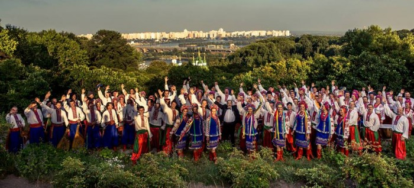
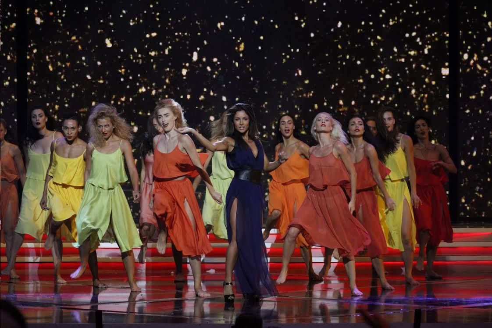
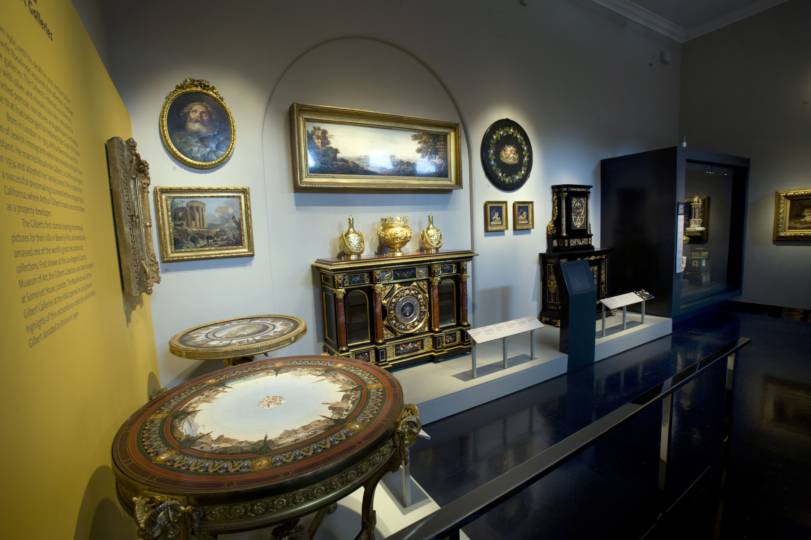
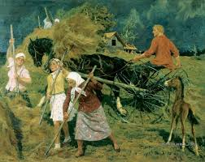
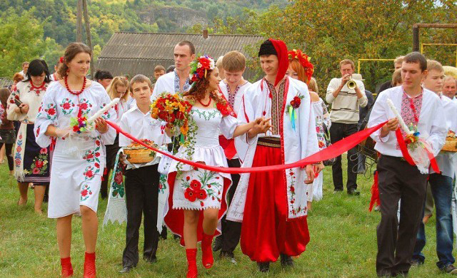

Культура Украины
Культура Украины имеет древнюю историю, она развивалась в сложных исторических условиях на протяжении долгих веков. Создавая свои культурные ценности, украинский народ впитывал в себя обычаи и традиции многих народов, судьба которых была связана с историей Украины.
Большое влияние на культуру украинского народа оказали греческая, римская и византийская культура, благодаря которым культура Украины обрела многие знания и умения. Важным событием, определившим на многие века художественное и духовное развитие культуры Украины, стало принятие христианства в 988 году. Несмотря на многообразие различных источников мировой культуры, украинцы создали свою самобытную, не похожую ни на какую другую, самобытную культуру. Культура Украины отражает неповторимость духовного мира народа, окружающей его природы и специфику традиций и обычаев.
На протяжении многих веков культура Украины развивалась как народная. Крестьяне, ремесленники, казаки – стали настоящими творцами и носителями культуры. Большое место в ней занимал устный фольклор (песни, сказки, былины, предания, пословицы и поговорки), народные танцы, декоративно-прикладное искусство. Культура Западной Украины своеобразна и необычна. В первую очередь, это связано с ее географическим положением и особенностями исторического пути, а также взаимодействием с другими культурами. На протяжении многих веков в Западную Украину проникали обычаи и традиции немцев, венгров, словаков, румынов. Такое сплетение культур не могло не повлиять на историческое и культурное наследие Западной Украины. Культура Западной Украины состоит из сохраненных обычаев и традиций русинов-украинцев, которые этнически разделяются на гуцулов, бойков, лемков. Каждая этническая группа имеет свою национальную мелодию, свою манеру исполнения обрядов, технику вышивания. Западная Украина – родина всемирно-известного мастера кисти – Игоря Грабара, известных в Европе художников Иосифа Бокшая, Федора Манайла, Андрея Коцки. Известна культура Украины такими фигурами, как композитор Евгений Станкович, Дезидерий Задор, певица Руслана и другими.
Музыка
Говорят, что, когда Бог раздавал таланты, Украине достались мелодичность и музыкальность. Так и повелось: украинский язык характеризуется мелодичностью, а музыкальность — основная черта украинского народа. И не даром, ведь первые музыкальные инструменты, изготовленные на территории страны, датируют 18 тысячелетием до нашей эры. С той поры утекло немало воды, но любовь к музе впитана украинским народом с молоком матери, о чем свидетельствуют многочисленные музыкальные мероприятия, регулярно проводимые на территории Украины. Разумеется, наибольшей любовью и популярностью пользуются, так называемые, этно фестивали. Самым любимым и долгожданным по праву можно назвать фестиваль «Країна Мрій», на котором собираются самые интересные музыканты Укрианы и Европы, играющие музыку в стиле этно. Еще один любимый, как в Украине, так и за ее пределами фестиваль – «Трипільське коло». Взрыв национального колорита и этноса обеспечен!
Так же можно вспомнить об одном из самых старых музыкальных фестивалей Украины – «Тарас Бульба». На нем представлены молодые и пока еще малоизвестные коллективы Украины, а основная цель мероприятия – популяризация украинской музыки и культуры. Пожалуй, «Тарас Бульба» - это самое патриотичное музыкальное событие Украины. Казантип – самое популярное и молодежное событие, участники которого съезжаются со всего мира, чтобы провести незабываемый месяц на берегу ласкового моря. Любят в Украине и джаз. Об этом свидетельствуют многочисленные джазовые концерты, фестивали и вечера. Например, в бархатный сезон на ласковом побережье Крыма, в колыбели вкуснейших вин и коньяков проходит ежегодный джазовый фестиваль «Джаз Коктебель». В Киеве традиционно проходит фестиваль Jazz in Kiev, который привлекает участников не только своей фестивальной программой, но мастер-классами от музыкантов с мировым именем. В рамках профессионального джазового фестиваля Dо#Dж , проводимого в Донецке, проходит международный конкурс молодых исполнителей «Dо#Dж junior». И, конечно, нельзя забыть о роке. Рок-фестивалей на Украине много: самого разного масштаба и разлива. От крупнейшего фестиваля «Чайка», в котором принимают участие, как молодые исполнители, так и заслуженные звезды, до «Славське-рок», посвященному не только рок-музыке, но и экологии. Отдельно стоит упомянуть о Global East Festival – молодом рок/метал фестивале, который, тем не менее, является самым масштабным на территории СНГ.
И это только небольшой перечень крупных украинских музыкальных мероприятий. Можно вспомнить Руслану, победительницу Евровиденья, Тину Кароль, победительницу Новой волны, Океан Эльзы, ВВ и Бумбокс – известнейшие рок-коллективы, Виа Гру и всех ее солисток, сделавших сольные карьеры, Пекардійську Терцію и многих, многих других на самый разнообразный вкус. Богата украинская земля талантами, а певческими – особенно.
Архитектура
Старинные здания соседствуют с шедеврами современной архитектуры, купола храмов возвышаются над древними крепостями, среди маленьких улочек затеряны настоящие дворцы. Поворачивая за угол, никогда не знаешь, что тебя там ожидает: идешь себе и вдруг застываешь пораженный великолепием возникшего перед тобой чуда. Разнообразные школы, эпохи и стили слились воедино, делая украинское зодчество уникальным и непередаваемо прекрасным.
Каменец-Подольский замок один из самых интересных и загадочных замков Украины. Несмотря на то, что первые упоминания о нем относят к 1374 году, некоторые историки сходятся во мнении, что замок существовал еще во времена Киевской Руси. Его каменная часть была возведена литовскими князьями Кориатовичами, и очень долго она была главным форпостом сначала литовской, а затем польской власти на Подолии. Так же замок играл значительную роль в отражении турецко-татарской экспансии на Запад. Уже к 1492 году деревянные башни и стены были заменены каменными, при этом благоустройство крепости велось вплоть до середины XVI века. С тех пор крепость сохраняет форму, известную нам по сей день.
Херсноес Таврический или, как его еще называют, «Русская Троя»– это город, основанный древнегреческими колонистами более двух с половиной тысяч лет назад на юго-западной оконечности Крыма. В прошлом это одна из крупнейших древнегреческих колоний с многочисленными храмами, площадями, сельскими усадьбами и наделами, сегодня – один из наиболее интересных исторических объектов Украины. Многолетние археологические раскопки позволили обнаружить под вековой пылью целый город с многочисленными архитектурными памятниками. «Ласточкино гнездо» было свито на отвесной скале южного побережья Крыма в 1912 году. За несколько десятилетий до этого, на этом участке был возведен первый дом, служивший дачей для отставного русского генерала. Затем участок несколько раз сменил владельцев, пока, наконец, не перешел во владения к барону Штейнгелю, который и приказал построить на этом месте романтический замок, напоминающий средневековые сооружения на берегах Рейна. Несмотря на кажущуюся хрупкость, строение перенесло сильное землетрясение в 7 баллов – в море сорвалось всего несколько острых шпилей и кусок скалы из-под балкона. Сегодня «Ласточкино гнездо» - визитная карточка Крыма, одно из наиболее любимых мест туристов со всего мира.

На одной из улиц Одессы возвышается настоящий дворец, возведенный из камня-ракушечника и облицованный инкерманским камнем. В начале двадцатого века здание принадлежало персидскому шаху, который бежал в Одессу от революции в Иране. Отсюда и пошло название строения – «Шахский дворец». Сочетание ранней английской готики и средневекового французского зодчества делает «Шахский дворец» строгим и легким одновременно, отражая вкусы, и натуру строителей конца XVIII – начала ХIХ века. Так же прекрасен и притягателен Одесский Государственный академический театр оперы и балета. Его здание выполнено в стиле венского «барокко», а фасад украшают скульптурные группы, аллегорически изображающие муз — покровительниц театра, музыки, танца, комедии и трагедии. Но даже не впечатляющий внешний вид является главной изюминкой Одесского театра – самое интересное находится внутри. Зрительный зал украшен различными лепными орнаментами с тонкой позолотой, на потолке в виде медальонов изображены четыре картины-сцены по произведениям Шекспира: «Гамлет», «Сон в летнюю ночь», «Зимняя сказка» и «Как вам это понравится». Так же, пожалуй, ни в одном театре нет и такого занавеса, изготовленного с потрясающим вкусом и изяществом.
Не уступает Одесской и Львовская Опера. Согласно многочисленным рейтингам по своей красоте и архитектуре она занимает второе место в Европе, пропустив перед собой только Венский оперный театр. Театр построен в классических традициях с использованием элементов архитектурных стилей ренессанса и барокко, в духе так называемого венского псевдоренессанса. Храм Иоанна Предтечи – это небольшая, изящная церковь с единственным куполом на высоком барабане. Не смотря на свои небольшие размеры, этот храм, расположенный в Керчи, без сомнений является еще одним выдающимся произведением украинской архитектуры. Во-первых, его невозможно спутать ни с одной другой церковью. Храм, строительство которого было начато, по одним источникам в ХХ веке, а по другим – в ХIII, совершенно удивительным образом объединяет в себе две разные архитектурные системы – базиликальную и крестово-купольную. Во-вторых, храм Иоанна Предтечи – это единственная уцелевшая византийская церковь северного Причерноморья. Берега Днепра украшает Киево-Печерская Лавра. Монастырь, по праву считающийся колыбелью монашества на Руси, был основан в ХI веке и застраивался в течение 9 следующих столетий. Большинство его строений являются прекрасным примером стиля украинского барокко в архитектуре. Сегодня архитектурный комплекс монастыря производит грандиозное впечатление на всех туристов не зависимо от их вероисповедания.
Еще одна жемчужина украинского барокко – Андреевская церковь, заложенная в 1744 году по приказу императрицы Елизаветы I. Это единственная работа знаменитого архитектора В.В.Растрелли, сохранившаяся в Украине. Блестящий образец синтеза искусства и архитектуры представляет собой Владимирский собор – символ расцвета украинского искусства XIX века. Свою славу храм снискал благодаря уникальным росписям, которые были выполнены величайшими художниками – В. М. Васнецовым, М. А. Врубелем, М. В. Нестеровым, П. А. Сведомским и В. А. Котарбинским. Святая София Киевская – это чудо византийской и древнерусской архитектуры, вечный источник произведений искусства и место паломничества многих историков и туристов. Поражает сбалансированность и продуманность каждой детали, как в архитектуре собора, так и в его оформлении. Как и во Владимирском соборе, в Святой Софии Киевской архитектура собора и его роспись образуют неповторимое единство.
Музей
Музей исторических ценностей Украины «Киевская Крепость». В 19 веке в Печерском районе Киева были построены фортификационные сооружения, которые вошли в линию укреплений древнего города. В то время сооружение носило название «Новая Печерская крепость», а спустя примерно 100 лет, когда сооружение утратило свою защитную функцию, крепость открыла свои двери для посещений ее территории в качестве экскурсии по музею.
Сегодня Музей «Киевская Крепость» насчитывает около 17 тысяч самых разных экспонатов. Уникальность этой крепости в том, что она считается самой большой и занимает 2 место в мире по величине среди подобных сооружений. Самым главным и известным объектом является госпитальное укрепление, которое находится на Черепановой горе. Госпитальное укрепление было построено из камня и кирпича. Внутри музея вы можете увидеть камеры и карцеры, в которые помещались нарушители. Площадь карцера составляет примерно 2 метра, на пол выливали воду и опускали температуру до нуля градусов, чтобы нарушитель осознал всю тяжесть своего поступка. В композициях, представленных в музеи, сохранились даже вещи осужденных, тюремное оружие, форма охраны, старинная посуда. Сохранилась и карета смертников, в которой они вывозились на казнь.
Музей-заповедник «Золочевский замок». Этот известный музей Украины расположен недалеко от Львова в небольшом уютном городке Золочев на улице Замковой, названной так в честь главной достопримечательности города. Строительство этого сооружения началось еще в средневековье, когда заложили первый форпост, тогда еще он был из дерева. Замок имеет богатую историю, когда-то он был даже главной королевской резиденцией. Позже в 1834 году замок превратили в больницу, а после сделали из него острог. В начале второй мировой войны произошло страшное событие, около 700 заключенных вывели к замковым стенам и расстреляли. В 1995 году на этом месте местные жители возвели небольшую Часовню. Замок оставался тюрьмой долгое время, только в 1953 году здание отдали под училище, которое прослужило до середины 80-х годов. Затем Золочевский замок отдали в распоряжение Львовской галереи искусств. Еще один музей исторических ценностей Украины по праву считается Керченский историко-археологический музей. Это один из самых старейших музеев Крыма, он был открыт в 1826 году и не прекращал свою работу даже в начале 20 века, вовремя всевозможных потрясений и переворотов в государстве. После становления советской власти в Крыму музей перешел во владение Комиссариата Народного образования и в 1922 году переехал в лучшее здание города – частный особняк владельца табачных фабрик П. Месаксуди.
Также существует другие известные музеи Украины, такие как: Николаевский Музей судостроения и флота, Ливадийский Дворец, Воронцовский Дворец, Национальный музей литературы, Музей Святогорского заповедника, Закарпатский областной художественный музей, Музей истории Запорожского казачества, Художественный музей имени Крошицкого М.П. и многие другие.
Изобразительное искусство
Еще во времена Киевской Руси талант украинского народа ярко проявлялся в изобразительном искусстве. Первыми произведениями живописи были иконы - религиозные картины. Украинские художники в иконах раскрывали сложный духовный мир человека, его быт и развлечения. Во фресках и мозаиках Софиевского собора (XI ст.) в Киеве рядом с религиозными сюжетами можно увидеть бытовые сцены: охоту, скоморохов, ипподром, групповой портрет семьи Ярослава Мудрого. Вплоть до XVII столетия главным художественным произведением в Украине оставались иконы. Характерная особенность украинской иконописи XVII столетия - рядом со святыми, Богоматерью можно увидеть портретные изображения гетмана Богдана Хмельницкого, казацкого старшины. Одежда святых декорирована народным орнаментом, они одеты в костюмы казацкой старшины того времени. Основным элементом резного обрамления икон также является народный орнамент. С открытием типографии Киево-Печерской лавры в середине XVII столетия широко развивается иллюстрирование печатной книги способами гравюры ("Требник" Петра Могилы). В XVII- XVIII ст. в Украине создается много народных картинок и парсунной живописи, характерной особенностью которых является декоративность, широкое использование элементов украинского народного орнамента. Основная тема украинской народной картинки - изображение "Казака Мамая" или "Казака-бандуриста", борца за волю и независимость Украины. Украина является родиной выдающихся художников-портретистов конца XVIII начала XIX столетий: Д. Левицкого, В. Боровиковского. Развитие украинского изобразительного искусства первой половины XIX столетия связано с именами художников В. Тропинина, К. Павлова, Тараса Шевченко - основоположника нового реалистического искусства. Во второй половине XIX столетия в искусстве крепко завоевывает позиции реалистическая школа профессиональной живописи. В Украине работают Репин, Суриков, Перов, Шишкин, Левитан. Тогда же организовываются передвижные выставки.
Национальная самобытность стала непременной чертой произведений украинских художников-передвижников М. Пимоненко, П. Мартыновича, С. Светославского, П. Левченко. Лучшим украинским портретистом конца XIX - начала XX столетий считается О. Мурашко - ученик Репина. Яркой страницей стал украинский авангард начала столетия, представленный именами всемирно известного скульптора О. Архипенко, художников В. Кричевского, А. Петрицкого, А. Маневича и др. К сожалению, много первостепенных художников (М. Бойчук, В. Седляр, И. Падалка и др.) погибли во времена репрессий.
Сегодня произведения Т. Яблонской, И. Марчука, Ф. Гуменюка, А. Чебикина, О. Бородай и других известны далеко за пределами Украины. Многочисленные музеи украинского изобразительного искусства дают полную многогранную характеристику самобытного творчества украинского народа от древнейших времен и до сегодняшнего дня.
Национальный костюм
Украинский национальный наряд — это один из ярчайших элементов богатой украинской культуры. Национальная одежда во все времена наглядно демонстрировала традиции народа, его богатую событиями историю, этнические особенности многовековой культуры и быта. Наиболее ярким и колоритным, отображающим восприятие красоты и эстетику народного творчества, является национальный украинский костюм. Именно одежда первой определяет принадлежность к тому или иному этносу, а в современном модном мире украинские мотивы — это еще и стильное дополнение к самобытному и популярному этно-стилю.
Зарождение украинской национальной одежды происходило с древних времен. Колыбелью можно считать именно славянскую культуру, которая и стала истоком формирования не только украинского, но и белорусского, и русского стиля в одежде. Поэтому все эти народы имеют много общего не только в истории, но и в традиционной одежде.
Традиционно одежда в украинском стиле — это не только вышиванки или шаровары. Она удивительно многолика и, в зависимости от региона, его климатических или этнических оттенков, имеет свои особенности и отличия. Каждый элемент наряда, каждый завиток на узоре имеет свое значение, берущее свои истоки многие века назад.